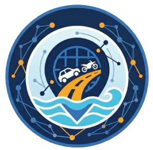

Analisis Mobilitas Banjir di Aceh Utara
Buka Panduan Penggunaan
Cari Fasilitas / Bangunan:
Cari
Jadikan Asal
Jadikan Tujuan
💡 Anda juga bisa langsung mengklik titik Asal & Tujuan di dalam peta
Pilih Moda Transportasi:
🚗 Mobil (Toleransi Genangan s/d 20 cm)
🏍️ Motor (Toleransi Genangan s/d 15 cm)
ANALISIS RUTE OPTIMAL
⏳ Memuat data jaringan jalan…
RESET PETA
Tampilkan Hasil Rute:
📏
Rute Terpendek (Jarak Minimum)
⏱️
Rute Tercepat (Waktu Minimum)
Terpendek
Tercepat
Informasi Dasar:
Jaringan Jalan
Bangunan
Batas Kabupaten
Kedalaman Genangan:
< 10 cm (Dangkal)
10 – 20 cm (Sedang)
> 20 cm (Dalam)